The Fast and the Furious
American franchise including a series of action films, which center on illegal street racing and heists, and various other media portraying the characters and situations from the films.
Featuring many famous actors included:
If you really pay attention to these movies, you will notice that every movie included driving the Nissan Skyline except for Furious 7. Brain O' Connor acted by Paul Walker drive them most of the time.
The Fast and the Furious (2001)
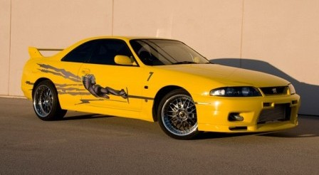 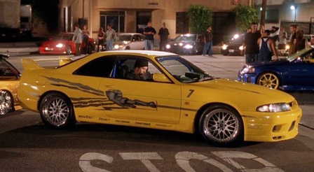
First installment of the Fast and the Furious series featuring Nissan Skyline GT-R R33. Although this car was not drive by the main, this yellow Skyline was the first Skyline ever show in the Fast and the Furious series.
2 Fast 2 Furious (2003)
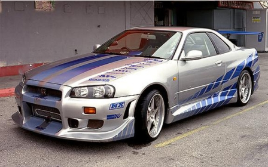 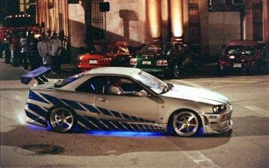
Second installment of the Fast and the Furious series featuring Nissan Skyline GT-R R34. This car was driving by main character, Brain O' Connor, however this car did not last long in the movie as this car was totalled after the police pursuit.
The Fast and the Furious: Tokyo Drift (2006)
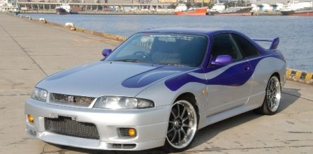 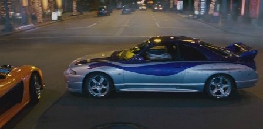
Third installment of the Fast and the Furious series featuring Nissan Skyline GT-R R33. This was not driving by main character. In the fact, this car was showed in the movie for only few minutes. Nobody know who was driving this car. However, this was third time the Skyline appear in the Fast and the Furious series.
Fast & Furious (2009)
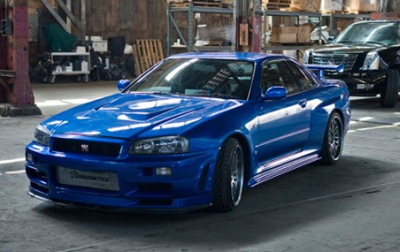 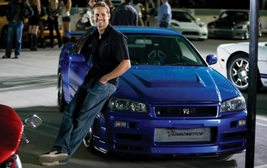
Fourth installment of the Fast and the Furious series featuring Nissan Skyline GT-R R34. This car was driving by main character, again, Brain O' Connor. Unlike other movie, this car lasted longer. This car went through intense racing and dangerous mission. The Skyline was really shine in this movie.
Fast Five (2011)
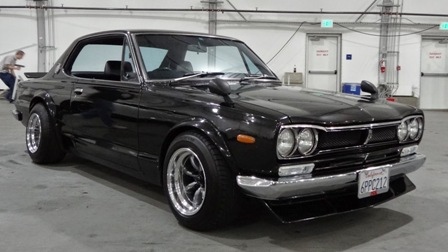 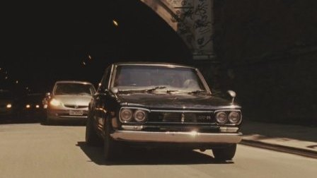
Fifth installment of the Fast and the Furious series featuring Nissan Skyline GT-R C10. This car was driving by main character, again, Brain O' Connor. This car did not last longer like other movie. This car was O' Connor's temporary car as he was hiding from polices.
Fast & Furious 6 (2013)
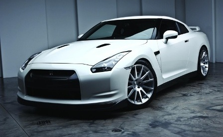 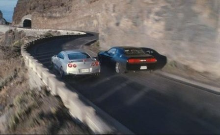
Sixth installment of the Fast and the Furious series did not featuring the Nissan Skyline but featuring the Nissan GT-R. Although it is not the Skyline but Nissan GT-R was the successor to the Nissan Skyline. This was driving by main character, again, Brain O' Conner. This car again did not lasted long but was driving by O' Connor as he bought this car as his freedom gift.